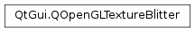

QOpenGLTextureBlitter¶
Synopsis¶
Functions¶
- def
bind([target=GL_TEXTURE_2D]) - def
blit(texture, targetTransform, sourceTransform) - def
create() - def
destroy() - def
isCreated() - def
release() - def
setOpacity(opacity) - def
setRedBlueSwizzle(swizzle) - def
supportsExternalOESTarget()
Static functions¶
- def
targetTransform(target, viewport)
Detailed Description¶
The
PySide2.QtGui.QOpenGLTextureBlitterclass provides a convenient way to draw textured quads via OpenGL.Drawing textured quads, in order to get the contents of a texture onto the screen, is a common operation when developing 2D user interfaces.
PySide2.QtGui.QOpenGLTextureBlitterprovides a convenience class to avoid repeating vertex data, shader sources, buffer and program management and matrix calculations.For example, a
PySide2.QtWidgets.QOpenGLWidgetsubclass can do the following to draw the contents rendered into a framebuffer at the pixel position(x, y):void OpenGLWidget::initializeGL() { m_blitter.create(); m_fbo = new QOpenGLFramebufferObject(size); } void OpenGLWidget::paintGL() { m_fbo->bind(); // update offscreen content m_fbo->release(); m_blitter.bind(); const QRect targetRect(QPoint(x, y), m_fbo->size()); const QMatrix4x4 target = QOpenGLTextureBlitter::targetTransform(targetRect, QRect(QPoint(0, 0), m_fbo->size())); m_blitter.blit(m_fbo->texture(), target, QOpenGLTextureBlitter::OriginBottomLeft); m_blitter.release(); }The blitter implements GLSL shaders both for GLSL 1.00 (suitable for OpenGL (ES) 2.x and compatibility profiles of newer OpenGL versions) and version 150 (suitable for core profile contexts with OpenGL 3.2 and newer).
-
class
PySide2.QtGui.QOpenGLTextureBlitter¶ Constructs a new
PySide2.QtGui.QOpenGLTextureBlitterinstance.Note
no graphics resources are initialized in the constructor. This makes it safe to place plain
PySide2.QtGui.QOpenGLTextureBlittermembers into classes because the actual initialization that depends on the OpenGL context happens only inPySide2.QtGui.QOpenGLTextureBlitter.create().
-
PySide2.QtGui.QOpenGLTextureBlitter.bind([target=GL_TEXTURE_2D])¶ Parameters: target – PySide2.QtOpenGL.GLenumBinds the graphics resources used by the blitter. This must be called before calling
PySide2.QtGui.QOpenGLTextureBlitter.blit(). Code modifying the OpenGL state should be avoided between the call to andPySide2.QtGui.QOpenGLTextureBlitter.blit()because otherwise conflicts may arise.targetis the texture target for the source texture and must be eitherGL_TEXTURE_2DorGL_OES_EGL_image_external.
-
PySide2.QtGui.QOpenGLTextureBlitter.blit(texture, targetTransform, sourceTransform)¶ Parameters: - texture –
PySide2.QtOpenGL.GLuint - targetTransform –
PySide2.QtGui.QMatrix4x4 - sourceTransform –
PySide2.QtGui.QMatrix3x3
Performs the blit with the source texture
texture.targetTransformspecifies the transformation applied. This is usually generated by thePySide2.QtGui.QOpenGLTextureBlitter.targetTransform()helper function.sourceTransformspecifies the transformation applied to the source. This allows using only a sub-rect of the source texture. This is usually generated by thesourceTransform()helper function.See also
sourceTransform()PySide2.QtGui.QOpenGLTextureBlitter.targetTransform()QOpenGLTextureBlitter.OriginPySide2.QtGui.QOpenGLTextureBlitter.bind()- texture –
-
PySide2.QtGui.QOpenGLTextureBlitter.create()¶ Return type: PySide2.QtCore.boolInitializes the graphics resources used by the blitter.
Returns
trueif successful,falseif there was a failure. Failures can occur when there is no OpenGL context current on the current thread, or when shader compilation fails for some reason.
-
PySide2.QtGui.QOpenGLTextureBlitter.destroy()¶ Frees all graphics resources held by the blitter. Assumes that the OpenGL context, or another context sharing resources with it, that was current on the thread when invoking
PySide2.QtGui.QOpenGLTextureBlitter.create()is current.The function has no effect when the blitter is not in created state.
-
PySide2.QtGui.QOpenGLTextureBlitter.isCreated()¶ Return type: PySide2.QtCore.boolReturns
trueifPySide2.QtGui.QOpenGLTextureBlitter.create()was called and succeeded.falseotherwise.
-
PySide2.QtGui.QOpenGLTextureBlitter.release()¶ Unbinds the graphics resources used by the blitter.
-
PySide2.QtGui.QOpenGLTextureBlitter.setOpacity(opacity)¶ Parameters: opacity – PySide2.QtCore.floatChanges the opacity to
opacity. The default opacity is 1.0.Note
the blitter does not alter the blend state. It is up to the caller of
PySide2.QtGui.QOpenGLTextureBlitter.blit()to ensure the correct blend settings are active.
-
PySide2.QtGui.QOpenGLTextureBlitter.setRedBlueSwizzle(swizzle)¶ Parameters: swizzle – PySide2.QtCore.boolSets whether swizzling is enabled for the red and blue color channels to
swizzle. An BGRA to RGBA conversion (occurring in the shader on the GPU, instead of a slow CPU-side transformation) can be useful when the source texture contains data from aPySide2.QtGui.QImagewith a format likeQImage.Format_ARGB32which maps to BGRA on little endian systems.By default the red-blue swizzle is disabled since this is what a texture attached to an framebuffer object or a texture based on a byte ordered
PySide2.QtGui.QImageformat (likeQImage.Format_RGBA8888) needs.
-
PySide2.QtGui.QOpenGLTextureBlitter.supportsExternalOESTarget()¶ Return type: PySide2.QtCore.boolReturns
truewhenPySide2.QtGui.QOpenGLTextureBlitter.bind()acceptsGL_TEXTURE_EXTERNAL_OESas its target argument.
-
static
PySide2.QtGui.QOpenGLTextureBlitter.targetTransform(target, viewport)¶ Parameters: - target –
PySide2.QtCore.QRectF - viewport –
PySide2.QtCore.QRect
Return type: Calculates a target transform suitable for
PySide2.QtGui.QOpenGLTextureBlitter.blit().targetis the target rectangle in pixels.viewportdescribes the source dimensions and will in most cases be set to (0, 0, image width, image height).For unscaled output the size of
targetandviewportshould match.- target –
© 2018 The Qt Company Ltd. Documentation contributions included herein are the copyrights of their respective owners. The documentation provided herein is licensed under the terms of the GNU Free Documentation License version 1.3 as published by the Free Software Foundation. Qt and respective logos are trademarks of The Qt Company Ltd. in Finland and/or other countries worldwide. All other trademarks are property of their respective owners.